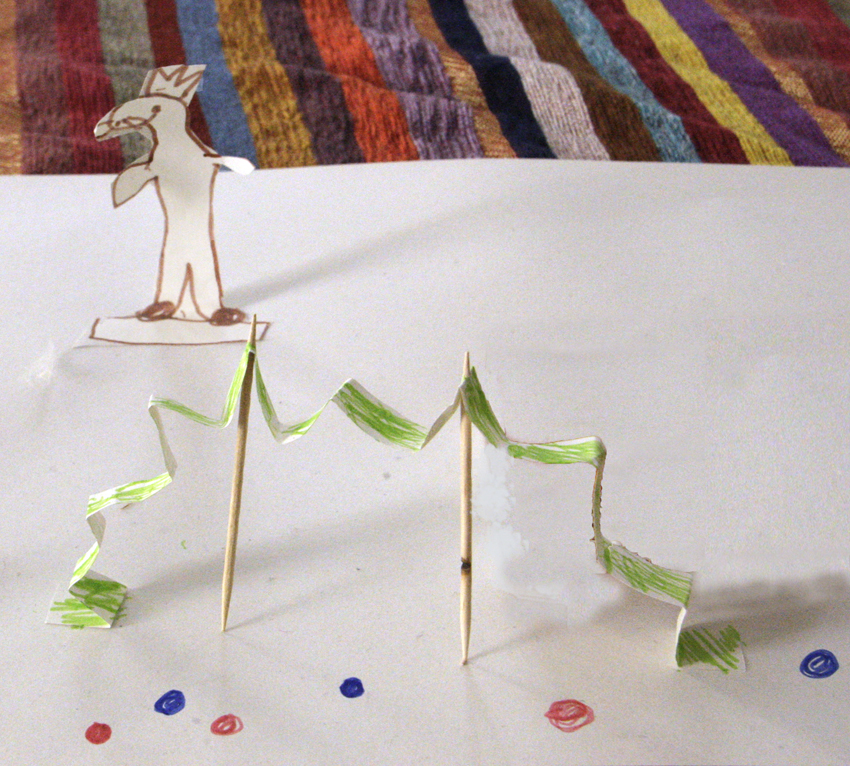

Pinterest
Instagram
ES
EN
DE
☰ Menu
Home
The House
Accessories
Decorate
Instruccions
Illustration
Custom water bottles
Notebook crafts and activities 01
App NOT ONLINE RIGHT NOW
Blog
Holidays
Christmas
Easter
Halloween
Carnival & costumes
Valentine’s Day
Birthday
Mother’s/Father’s Day
Back to school
Seasons
Spring
Summer
Autumn
Winter
What to do
Toys
Games
Printables
Food & recipes
Decoration
Painting
Experiments
Outdoors
Learning
Animals
Gifts & jewellery
Building & tricks
Other crafts
Material
Paper
Cardboard
Paper rolls
Recycling
Stones
Leaves & nature
Fabric & sewing
Home
›
Blog
Blog
Holidays
Christmas
68
Easter
43
Halloween
26
Carnival & costumes
36
Valentine’s Day
15
Birthday
13
Mother’s/Father’s Day
4
Back to school
10
Seasons
Spring
19
Summer
42
Autumn
22
Winter
32
What to do
Toys
79
Games
125
Printables
47
Food & recipes
95
Decoration
96
Painting
64
Experiments
19
Outdoors
64
Learning
67
Animals
113
Gifts & jewellery
89
Building & tricks
81
Other crafts
46
Material
Paper
94
Cardboard
61
Paper rolls
23
Recycling
121
Stones
33
Leaves & nature
53
Fabric & sewing
42
Material
ABC button book
Toy
Chalk photos
Activity
Animal laughing game
Printables
Kokeshi colouring: boys
Printables
Kokeshi colouring: girls
Activity
Wrapped thread bracelet
Occasion
Spooky popcorn hands
Material
Pocket sleeping bags
Activity
Days of the week calendar
Activity
Wire and tape flower
Activity
Crazy cork figures
Material
Birthday age gift wrap
Activity
Number tower
Activity
Paper launch
Material
Little gift boxes
Occasion
Flapping bat
Activity
Marble maze
Toy
Can and bottle cap rattle
Occasion
Saint Dionysius' Day
Paper
A surprise

Material
Owl lanterns
Occasion
Spider web Halloween shirt
Occasion
Halloween spider web headband
Activity
Magic wands
← Newer
Page 23 / 40
Older →